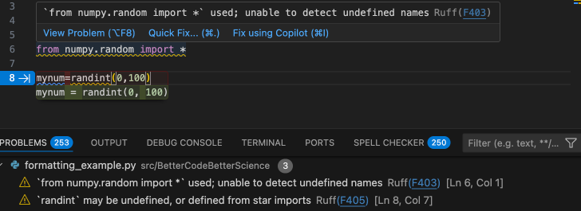
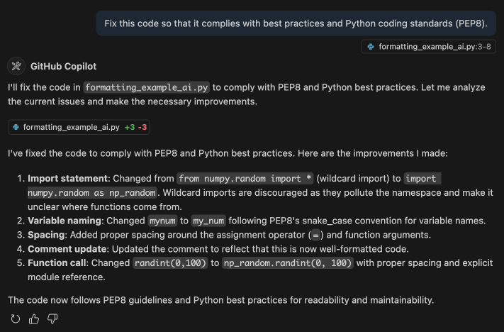

4 Principles of software engineering
Programming is the activity of using a computer to solve problems by creating computer software (either on one’s own or via AI coding tools). Software engineering is a larger discipline that uses scientific methods to understand how to create software that is more effective, robust, efficient, secure, and maintainable. Just as structural engineering is the science of creating a physical building, software engineering is the science of building software. Programming without understanding the concepts of software engineering is much like building a house without understanding the concepts of structural engineering: While it’s possible, the resulting software is likely to suffer from exactly the same kinds of instability and poor functionality as a house built by an amateur, especially as the project becomes larger and more complex.
In the previous chapter I introduced some of the basic tools of software engineering, such as version control, along with the notion that that we want to reduce the complexity of our code whenever possible. In this chapter I will outline some of the “big ideas” from software engineering, highlighting how their adoption can improve the life of nearly anyone who develops, and especially maintains, software.
4.1 Why software engineering matters in the age of AI-assisted coding
One might ask why I am spending an entire chapter talking about software engineering, when AI tools are increasingly able to generate working software for us. First, think back to the point I made in Chapter 1: Programming is not equivalent to writing code. Even if the AI system can write computer code (e.g., in Python), a human needs to describe the problem(s) that the software is meant to solve, and to iterate with the code to debug any failures to solve the problem. This requires that a human understand the problem well enough to clearly specify it to the AI coding agent: we may have traded Python for English as our programming language of choice, but nonetheless the human needs to precisely specify the goals of the software in order to successfully solve the problem of interest. Thus, an understanding of the software development process will remain essential even as AI assistants write an increasing amount of code, and the tools of software engineering help make that process work better.
When we start creating code using AI tools, it’s also important to understand that human natural languages are generally not precise enough to specify a problem for a computer to solve; this is why programming languages were invented in the first place! What happens when we work with an AI coding agent is that they fill in the gaps of the precise specification that a human software engineer would provide with assumptions about how the problem should be solved. Sometimes these assumptions will be made obvious (e.g. in the planning documents that an agent creates), but often they will go unstated, only to be noticed if and when they result in problems down the road.
Good software engineering practices become even more essential once a project becomes large and involves multiple developers. Coordination costs can quickly eat into the added benefit of more developers on a project, particularly if there is not a strong development process in place. And writing good, clean code is essential to help bring new developers into a project; otherwise, the startup costs for a developer to get their head around a poorly engineered codebase can just be too large. Similarly, poorly written code can result in a heavy reliance on a single individual to keep the code working. This is sometimes known as a high “bus factor” (i.e., what happens if your lead developer gets hit by a bus?); I will talk later in this chapter about the concept of "technical debt", which becomes particularly risky when the tool in question relies upon a single individual.
4.2 Managing Complexity: The Primary Concern of Software Engineering
If you have ever written a large piece of software, you have likely encountered a situation where you start to feel overwhelmed by the complexity of the code. You want to make one simple change, but realize that the apparently simple change has cascading effects that require many different changes across the codebase. Or even worse, things unexpectedly start to fail for reasons that you can’t understand, and every fix causes a new error. You might even get a headache and decide to go do something more pleasant, like flossing your teeth or doing burpees.
These are the symptoms of complexity, which is the primary enemy of the software developer. John Ousterhout, in his wonderful book A Philosophy of Software Design (Ousterhout 2021), defines software complexity as follows:
Complexity is anything related to the structure of a software system that makes it hard to understand and modify the system.
Software that solves a complex scientific problem will necessarily be complex, but the primary goal of software engineering and design is to minimize the complexity as much as possible.
4.2.1 Modularity
A key to minimizing complexity is to make our software modular, meaning that its functions can be decomposed into separate components that interact with one another only through defined interfaces. Complex modular systems are also usually hierarchical, in the sense that they have multiple levels of organization and each component at one level can be broken down into a set of components at a lower level. In a 1962 paper entitled The Architecture of Complexity (Simon 1962), Herbert Simon argued that our ability to understand many different types of complex systems (physical, biological, and social) relies heavily on the near-decomposability that arises in systems where the different modules are insulated from each other except through specific interfaces. The importance of insulating different modules in computer programming was introduced by David Parnas (Parnas 1972), who pointed out that decomposing code based on the concept of “information hiding” can make code much easier to modify than a decomposition based on the logical “flowchart” of the problem being solved.
A common expression of the idea of modularity in software development is the Single Responsibility Principle, which states that a function or class should only have one reason to change. This principle is often summarized as saying that a function or class should only “do one thing”, but that’s too vague; a clearer way to state this is that a function or class should have a clear and cohesive purpose at the appropriate level of abstraction. Let’s look at an example to help make this clearer. Say that we are developing an analysis workflow for RNA-sequencing data, involving the following steps:
Read trimming and filtering
Alignment to reference genome
Quantification of expression
Normalization
Differential expression analysis
At the highest level, we could specify a function that runs the entire workflow, taking in a raw data array and an object that contains configuration information:
def run_workflow(raw_data, config):
data = data_setup(raw_data, config)
data['trimfilt'] = run_trim_filt(data, config)
data['aligned'] = run_alignment(data, config)
data['quant'] = run_expression_quantification(data, config)
data['normalized'] = run_normalization(data, config)
data['diffexpress'] = run_differential_expression(data, config)
return dataThis function clearly performs several operations, but viewed from the appropriate level of abstraction, it does one thing: it executes the workflow. Importantly, the only thing that would cause this function to change is if the workflow changed; any changes within the components of the workflow would not require changes to this function unless they caused a change in the component function’s interface. In this way, the high level workflow manager is insulated from the implementation details of each of the components, interacting with them only through their inputs and outputs. Each of the different workflow components can also be insulated from the other components, as long as they rely only upon the arguments provided to the function.
Having discussed how the structure of code can increase or reduce complexity, we now turn to the nature of the development process, which also plays an important role in minimizing complexity.
4.3 Software Development Methodologies
When I was in graduate school, I spent countless hours developing a tool for analyzing human behavioral data that was general enough to process not just the data that I needed to analyze for my project, but also nearly any other kind of data that one might envision from similar experiments. How many of those other kinds of data did I ever actually analyze? You guessed it: Zilch. There is an admirable tendency amongst some scientists to want to solve a problem in a maximally general way, but this tendency is not limited to scientists. In fact, it has a name within software circles: “gold plating”. Unfortunately, humans are generally bad at predicting what is actually needed to solve a problem, and the extra work spent adding gold plating might be fun for the developer but rarely pays off in the longer term. Software engineers love acronyms, and a commonly used acronym that targets this kind of overengineering is YAGNI: “You Aren’t Gonna Need It”.
Within commercial software engineering, it was once common to develop a detailed requirements document before one ever started writing code, and then move on to code writing using those fixed requirements. This is known as the waterfall method for project management; it can work well in some domains (like physical construction, where the plans can’t change halfway through building, and the materials need to be on hand before construction starts), but in software development it often leads to long delays that occur once the initial plan runs into challenges at the coding phase. Instead, most software development projects now use methods generally referred to as Agile, in which there are much faster cycles between planning and development. One of the most important principles of the Agile movement is that “Working software is the primary measure of progress” (Beck et al. 2001). It’s worth noting that a lot of dogma has grown up around Agile and related software development methodologies (such as Scrum and Kanban), much of which is overkill for scientists producing code for research. But there are nonetheless some very useful concepts and processes that we can take from these methodologies to help us build scientific software better and faster. In our laboratory, we focus heavily on the idea of the “minimum viable product” (MVP) that grows out of the Agile philosophy. We shoot for code that solves the scientific or technical problem at hand: no more, and no less.
4.4 Designing software through user stories
It’s important to think through the ways that a piece of software will be used, and one useful way to address this is through user stories. Understanding specific use cases for the software from the standpoint of specific users can be very useful in helping to ensure that the software is actually solving real problems, rather than solving problems that might theoretically exist but that no user will ever engage with. A user story is often framed in the following way: “As a [type of user], I want [a particular functionality] so that [what problem the functionality will solve]”. As an example, say that a researcher wanted to develop a tool to convert between different data formats. A couple of potential user stories for this software could be:
“As a user of the ABC123 data collection device, I want to convert my raw data to the current version of the SuperMegaFormat, so that I can submit my data to the OmniData Repository.”
“As a user of software that that requires my data to be in a specific version of the SuperMegaFormat, I want to validate that my data have been properly converted to comply with that version of the format so that I can ensure that my data can be analyzed.”
These two stories already point to several functions that need to be implemented:
The code needs to be able to access specific versions of the SuperMegaFormat, including the current version and older versions.
The code needs to be able to read data from the ABC123 device.
The code needs to be able to validate that a dataset meets any particular version of the SuperMegaFormat.
User stories are also useful for thinking through the potential impact of new features that are envisioned by the coder. Perhaps the most common example of violations of YAGNI comes about in the development of visualization tools. In this example, the developer might decide to create an visualizer to show how the original dataset is being converted into the new format, with interactive features that would allow the user to view features of individual files. The question that you should always ask yourself is: What user stories would this feature address? If it’s difficult to come up with stories that make clear how the feature would help solve particular problems for particular kinds of users, then the feature is probably not needed.
4.5 Refactoring code
Throughout the book I will regularly mention the concept of refactoring. When we refactor a piece of code, we modify it in a way that doesn’t change its external behavior. The idea long existed in software development but was made prominent by Martin Fowler in his book Refactoring: Improving the Design of Existing Code (Fowler & Beck 1999). As the title suggests, the goal of refactoring is to improve existing code rather than adding features or fixing bugs - but why would we spend time modifying code once it’s working, unless our goal is to add something new or fix something that is broken?
In fact, the idea of refactoring is closely aligned with the Agile development philosophy mentioned above. Rather than designing a software product in detail before coding, we can instead start with an initial design that we update as we go, understanding that this is just a first pass. As Fowler says:
“With refactoring, we can take a bad, even chaotic, design and rework it into well-structured code. Each step is simple — even simplistic. I move a field from one class to another, pull some code out of a method to make it into its own method, or push some code up or down a hierarchy. Yet the cumulative effect of these small changes can radically improve the design.” - Fowler (p. xiv)
There are several reasons why we might want to refactor existing code. Most importantly, refactoring can help make the code easier to maintain. This in turn often implies making it easier to read and understand, as I discuss further below in the context of clean coding. For example, we might want to break a large function out into several smaller functions so that the logical structure of the code is clearer from the code itself. Making code easier to understand and maintain also helps make it easier to add features to in the future. There are many other ways in which one can improve code, which are the focus of Fowler’s book; I will outline more of them below when I turn to the problem of “code smells”.
It is increasingly possible to use AI tools to refactor code. As long as one has a solid testing program in place, this can help save time and also help learn how to refactor code more effectively. However, refactoring with AI tools also introduces the risk of subtle bugs or changes in behavior. This suggests that testing needs to be a central part of our coding process, which is why I will devote the entire next chapter to it.
4.6 Test-driven development
Let’s say that you have a software project you want to undertake, and you have in mind what the Minimum Viable Product would be: A script that takes in a dataset and transforms the data into a standardized format that can be uploaded to a particular data repository. How would you get started? And how would you know when you are done?
After decomposing the problem into its components, many coders would simply start writing code to implement each of the components. For example, one might start by creating a script with comments that describe each of the needed components:
# Step 1: index the data files
# Step 2: load the files
# Step 3: reformat the metadata to match the repository standard
# Step 4: combine the data and metadata
# Step 5: save the data to the required formatA seemingly sensible way to proceed would then be march through the steps and write a function to accomplish each one, and then test the entire package once all of the functions are created. However, this approach has a couple of drawbacks. First, since you can’t run the application until all of the code is written, you can’t know whether each component is working properly until the entire package is built. Second, it’s easy to end up writing code that you would actually need, since you haven’t specified exactly what the inputs and outputs are for each component. Finally, once you start integrating all of the components, you won’t have a way to know if you have introduced a bug.
One answer to these problems is to start the process by creating a set of tests, which tell us whether the code has solved our intended problems. The process of writing tests before writing code to solve the problem is known as test-driven development (TDD), which I think is a very useful framework to use when writing scientific code, especially if one plans to use LLMs for code generation. Test-driven development is somewhat controversial within the software engineering field, in part due to the strident rhetoric of some TDD advocates, but also due to concerns about whether it might actually result in poorer software designs1. But I think that when it is used in a thoughtful way, TDD can be a powerful way to increase the effectiveness and accuracy of one’s code. In addition, TDD is very useful in the context of AI coding agents, where it can help keep the agent on track and ensure that it focuses on the main problem at hand.
I will dive deeply into testing in the next chapter; here I will simply outline a simple test-driven development workflow for the data transformation problem described above. The TDD workflow can be summarized in a cycle involving three steps:
Red: Create a test that initially fails for the intended function.
Green: Create a function that passes the test.
Refactor: Modify the code to make it more maintainable, readable, and robust
These processes are then repeated until the software solves the intended problem in a way that meets the needs of the project (such as maintainability). This process helps prevent the developer from writing code to solve problems that don’t exist yet, since the only aim is to create code that passes the specific test in question.
4.7 Clean coding
“Any fool can write code that a computer can understand. Good programmers write code that humans can understand.” (Fowler & Beck 1999 p. 10)
Another idea that has emerged from the Agile community is clean coding, which is the idea that code should be simple, readable, and easily maintainable. This idea was codified in the book titled Clean Code: A Handbook of Agile Software Craftsmanship (Martin 2025) by Robert C. Martin (known in the community as “Uncle Bob”). One of the best ways to describe clean code is that it is simple. Kent Beck, another Agile founder who developed the related idea of “Extreme Programming”, laid out a set of rules for simple code:
The code has tests and all of the tests run.
The code contains no duplication.
The code makes the design of the system clear
The code minimizes the number of entities (such as functions or classes).
Another way to think about clean code is that it makes it as easy as possible for another programmer to come in later and change it. And it’s essential to remember that this “other programmer” is mostly likely to refer to future you! When we look back at code that we wrote more than a few months ago, we are likely to remember very little of it, meaning that we need to rediscover the design and structure of the code.
There are many different interpretations of the concept of clean code. Here I will lay out the principles that I think are most important for the creation of code in the context of scientific research (as opposed to commercial software development). Fortunately, the code generated by AI coding assistants is often quite clean; this was true even in our early analyses of code generated by GPT-4 (Poldrack et al. 2023), and in my experience it has remained the case. But as we work alongside these assistants, it’s important to develop a mindset of continuous improvement, always seeking to make the code cleaner and simpler whenever we can.
4.7.1 Readability
An excellent test for whether code is clean is whether it is readable. In fact, one of the 19 guiding principles of the Python language, enshrined in The Zen of Python (Peters n.d.), is “Readability counts”, reflecting the judgment by Python founder Guido van Rossum that “code is read much more often than it is written” (G. Van Rossum 2021).
4.7.1.1 Naming things well
The book “Naming Things” (Benner 2023b) by Tom Benner is subtitled “The Hardest Problem in Software Engineering”, which might sound hyperbolic but really can turn out to be true once you start trying to come up with good names as you program. Benner provides a summary on his blog of what he calls “The 7 principles of naming” (Benner 2023a), a subset of which I will detail here. However, I highly recommend the book for much more detail on how to follow each of the principles. It’s particularly important to point out that these different principles may sometimes clash with one another, requiring the judgment of the developer to determine the best name to use.
Consistency: “Each concept should be represented by a single, unique name.”
The use of different names for the same concept can lead the reader to assume that there are two different concepts at play, often known as a “jangle fallacy”. This might occur when a similar concept appears across multiple functions, but is named differently; for example, a variable referring to a specific large language model is called modelname in one function and llm_label in another.
Conversely, using the same name to represent two different concepts can lead the reader to think that they are referring to the same thing, which is called a “jingle fallacy”. For example, this could occur if one were to use the variable name model to refer to an instance of a model class within one function but to a string containing the model name in another function. This problem is particularly likely to occur when one uses names that are too simple (see below).
Understandability: “A name should describe the concept it represents.”
The reader should be able to accurately infer from the name what is being represented. This implies the common proscription against single-letter variable names, except in cases where the context makes very clear what its function is (e.g., as a counter in a compact loop). More generally, when creating a variable name it’s worth thinking about what kind of confusion might occur, and also who the intended audiences are. For example, it can be particularly useful to select terms that are common within the relevant scientific domain when available. Other important guidelines for understandability are using the right pluralization (e.g., a variable with a pluralized name should contain more than one thing, and vice versa for variables with a singular name) and the right part of speech (for example, functions should generally use verbs while variables and classes should generally use nouns).
Specificity: “A name shouldn’t be overly vague or overly specific.”
One should avoid very generic names such as “object” or “request”. In addition, the name of a function should highlight its intended use, rather than details about the implementation. For example, say that we develop a function that uses a fast Fourier transform to perform bandpass filtering a timeseries. A name like filter_timeseries_bandpass focuses on the intended use, whereas a name like fft_timeseries would highlight the implementation details without specifying what the function is meant to do.
Brevity: “A name should be neither overly short nor overly long.”
Most coders tend to err on the side of variables names that are too short, with single-letter names being epitome of this. One useful concept from Martin’s Clean Code is that the length of a variable name should be related to the scope of the variable. When a single-letter variable name is used in the context of a very compact loop, its meaning will be immediately obvious. However, as a variable is used across a broader scope, using a more detailed name will allow the reader to understand the variable without having to look back at where it was previously used to understand its meaning. I would generally suggest to err on the side of using names that are too long versus too short, since the cost to typing longer names is reduced by the autocompletion features present in modern IDEs.
Pronounceability: “A name should be easy to use in common speech.”
Pronounceability is primarily important for cognitive reasons: We are much more likely to remember things that are meaningful to us compared to things that don’t have obvious meaning. In addition, an unpronounceable name makes communicating about the object with others (e.g., in a code review) very difficult. So while bfufftots might seem like a clever acronym for “bandpass filter using FFT on time series”, filter_timeseries_bandpass is probably more effective and will certainly be clearer to readers.
Austerity: “A name should not be clever or rely on temporary concepts.”
Programmers often like to use humorous or clever object names. For example, a function that marks a directory for later deletion might be called terminator(). As clever as this might seem, it’s not useful for anyone who doesn’t have the same cultural context (i.e. Arnold Schwarzenegger’s line “I’ll be back” from the film Terminator.) Object names should be boring and matter-of-fact to ensure that they are as widely understandable as possible.
4.7.1.2 Using empty space properly
Another important aspect of readability is the judicious use of empty space. While users of other languages sometimes revolt at the fact that empty space plays a syntactic role in Python, I actually view this is a very useful feature of the language, because it enhances the readability of code. For example, the following code is perfectly legitimate in R, but inferring its structure from a quick glance is difficult:
trans_levels <- list(); for (gene in genes) {snps <- get_snps(gene,
.001)
trans_levels[[gene]] <-
get_transcript_level(gene, snps)}; phenotype < - get_phen(gene, trans_levels[[gene]])On the other hand, the syntactic role of horizontal empty space in Python enforces much clearer visual structure:
trans_levels = {}
for gene in genes:
snps = get_snps(gene, .001)
trans_levels[gene] = get_transcript_level(gene, snps)
phenotype = get_phen(gene, trans_levels[gene])In this case, the horizontal spacing helps make more visually apparent the fact that there is likely an error in the code, with the gene variable that indexes the loop being used outside of the loop.
Vertical empty space also plays a role in readability, by helping to distinguish conceptually or logically related section of code. At the same time, it’s important to not overuse vertical white space; our ability to understand code that we can see at once is much better than understanding code that spreads across multiple screen pages (which requires holding more information in working memory), so it’s important to use vertical empty space judiciously.
4.7.2 Commenting code
There are few topics where the common understanding differs so much from expert consensus as in the use of comments within code. For many programmers, the term “documentation” is largely synonymous with code comments, and it is common to hear novice programmers complaining about the need to add comments to their code before releasing it. On the other hand, one of the most consistent messages from the software engineering literature is that comments are far too often used as a “magic balm” for bad code:
“Don’t comment bad code — rewrite it” (Kernighan & Plauger 1978)
“Clear and expressive code with few comments is far superior to cluttered and complex code with lots of comments. Rather than spend your time writing the comments that explain the mess you’ve made, spend it cleaning that mess.” (Martin 2025)
“comments aren’t a bad smell; indeed they are a sweet smell. The reason we mention comments here is that comments are often used as a deodorant. It’s surprising how often you look at thickly commented code and notice that the comments are there because the code is bad.” (Fowler & Beck 1999)
The overall goal of code comments should be to help the reader know as much as the writer knows about the code. I will start by outlining the kinds of things that do not warrant comments, and then turn to the legitimate uses of comments.
Tip
What the code is doing should be clear from the code itself. Comments should explain why the code is doing what it’s doing.
4.7.2.1 What not to comment
Ugly or indecipherable code
Rather that adding comments, one should instead refactor so that the code is understandable. Here is an example of indecipherable code with a comment as deodorant:
# function to create a random normal variate
# takes mean and SD as arguments
def crv(a=0, b=1):
u = [random.random() for i in range(2)]
z = math.sqrt(-2 * math.log(u[0])) * \
math.cos(2 * math.pi * u[1])
return a + b * zWe could instead use understandable names to make the code more readable:
def random_normal_variate(mean=0, stddev=1):
unif = [random.random() for i in range(2)]
box_muller_z0 = math.sqrt(-2 * math.log(unif[0])) * \
math.cos(2 * math.pi * unif[1])
return mean + stddev * box_muller_z0In this case, we don’t need a comment to explain the function because its name and the names of its arguments make clear what its function is and how to use it. By using the variable name box_muller_z0 we also make clear what algorithm this computation reflects (the Box-Muller transform).
The obvious
Anything that is clear from the structure of the code or the names of the variables doesn’t need to be commented. Here are some examples of unnecessary comments:
# looping over states
for state_index, state in enumerate(states):
...
# function to create a random normal variate
def create_random_normal_variate(mean, sd):
...In general one should assume that the reader of code has a good understanding of the language, such that they could understand that first example involves a loop over states. An exception to this rule is when one is writing code for educational purposes; in that case, one might want to include comments that are more didactic even though they would cause clutter for an experienced programmer.
Historical information
Rather than including historical notes about the code:
# RP changed on 2/22/2025 to include sd argument
def random_normal_variate(mean=0, stddev=1):
...One should instead use a version control to track changes.
git commit -m"feature: added std dev argument to random_normal_variate"It’s then possible to see who is responsible for each line in a particular source file using the git blame function:
> git blame random_numbers.py
^e14a07d (Russell Poldrack 2025-02-22 07:54:37-0800 1) import random
^e14a07d (Russell Poldrack 2025-02-22 07:54:37-0800 2) import math
^e14a07d (Russell Poldrack 2025-02-22 07:54:37-0800 3)
73cee79c (Russell Poldrack 2025-02-22 07:55:19-0800 4) def random_normal_variate(mean=0, stddev=1):
^e14a07d (Russell Poldrack 2025-02-22 07:54:37-0800 5) unif = [random.random() for i in range(2)]
^e14a07d (Russell Poldrack 2025-02-22 07:54:37-0800 6) box_muller_z0 = math.sqrt(-2 * math.log(unif[0])) * \
^e14a07d (Russell Poldrack 2025-02-22 07:54:37-0800 7) math.cos(2 * math.pi * unif[1])
73cee79c (Russell Poldrack 2025-02-22 07:55:19-0800 8) return mean + stddev * box_muller_z04.7.2.2 What to comment
Intention (aka “Director’s Commentary”)
Comments should help the reader understand important design choices that would not be evident from simply reading the code. For example:
# using a numpy array here rather than
# a pandas DataFrame for performance reasonsKnown flaws or TODO items
It’s often the case that there are remaining known issues with code that the developer has not yet had the time to address. These should be noted with a consistent heading (e.g., “TODO”) so that they can be easily searched for. For example:
# TODO: Current algorithm is very inefficient
#- should parallelize to improve performanceComments on constant values
When including constant values, it can be useful to describe the motivation for the specific value chosen.
# Using 1000 bootstrap replicates based on recommendation
# from Efron & Tibshirani 1993
n_replicates = 10004.7.3 Avoiding “code smells” and “anti-patterns”
There are two related concepts that are used to describe the appearance of potentially problematic code The “anti-pattern” is a riff on the concept of a design pattern, which is a recommended solution (i.e., a “best practice”) for a common programming problem (Gamma 1995). An anti-pattern is conversely a commonly used but bad solution (i.e., a “worst practice”) for a common programming problem. In the Python world these are well known from “The Little Book of Python Anti-Patterns” (Code 2018), which lays out many different anti-patterns common in Python coding. The second idea, that of the “code smell”, has been popularized by Martin Fowler in his well-known book on refactoring (Fowler & Beck 1999). Just as a bad smell from food can give us an intuitive sense that the good might be spoiled, code smells are intuitive reactions to code that suggest that there might be a problem that could be a target for refactoring.
Here I outline several bad smells and anti-patterns commonly found in my experience with scientific code.
4.7.3.1 Duplicated code
One of the most common smells in scientific code is the use of repeated blocks of duplicated code with only minor changes. For example:
mean_rt_1 = stroop_data['ResponseTime'].mean()
mean_rt_2 = flanker_data['RT'].mean()
mean_rt_3 = nback_data['RespTime'].mean()
grand_mean_rt = np.mean([mean_rt_1, mean_rt_2, mean_rt_3])This code might work, but it is problematic for several reasons. First, any changes to the intended operation (in this case computing the mean of the ‘ResponseTime’ variable in the data frame) would require making changes on multiple lines. In this example the lines are close to one another so it would be easy to see that they all need to be changed, but if they were separated by many others then one would need to be sure to make the change in each place. Second, imagine that we wanted to include an additional test in the dataset; we would need to add a new line to compute the mean for the added test, and also would need to remember to add it to the computation of the grand mean. Third, an especially strong code smell is the use of numbers as part of variable names, rather than using a data structure such as a dictionary or data frame that inherently represents the data within a single iterable object. Let’s say that we decided to remove the flanker task from our dataset; we would then need to remember to remove mean_rt_2 from the grand mean computation, which could result in errors if we forgot.
Here is a refactored version of the code that:
extracts the task names and associated data frame column names for the response time variable for each into a dictionary
loops through the dictionary elements and extracts the data from the relevant column, saving them to a dictionary
computes the grand mean using the values from the dictionary created from each dataset
rt_column_names = {
'stroop': 'ResponseTime',
'flanker': 'RT',
'nback': 'RespTime'
}
mean_rt = {}
for test, column_name in rt_column_names.items():
mean_rt[test] = data[test][column_name].mean()
grand_mean_rt = np.mean(list(mean_rt.values()))This refactoring has more lines of code than the original, but it will be much easier to understand, to maintain, and to modify. Also note the use of vertical empty space to highlight the distinct logical components of the code.
4.7.3.2 Magic numbers
A magic number is a number that is included in code directly rather than via assignment to a variable. For example:
def proportion_significant(data):
return np.mean(data > 3.09)What does “3.09” refer to? A statistically literate reader might infer that this was meant to refer to the 99.9th percentile of the standard normal (Z) distribution, but couldn’t be certain without talking to the developer. Another particular problem with floating point magic numbers is that they often are rounded (i.e., 3.09 rather than 3.090232306167813), which could lead to imprecise results in some contexts. Another problem with this example is that the value can’t be changed by the user of the function. It would be better compute the value formally based on an explicit input of the desired threshold probability, and then assign it to a named variable that makes clear what it means:
def proportion_exceeding_threshold(data, p_threshold=.001):
z_cutoff = scipy.stats.norm.ppf(1 - p_threshold)
return np.mean(data > z_cutoff)In cases where the hardcoded value is truly the specification, then one should use a named variable rather than simply inserting the number; this way, the reader will know what the value refers to. It is also useful to include a comment justifying the value in cases where it wouldn’t be obvious to a domain expert.
4.7.3.3 Long parameter lists
A long list of parameters in a function definition can be confusing for users. One way that Python coders sometimes get around specifying long parameter lists is the use of the **kwargs argument, which allows the specification of arbitrary keyword arguments to a function, placing them within a dictionary. For example:
>>> def myfunc(**kwargs):
print(kwargs)
>>> myfunc(myarg=1, mybool=True)
{'myarg': 1, 'mybool': True}This can be useful in specific cases, but in general should be avoided if possible, as it makes the code less clear and prevents the use of type hints (described in detail later in the chapter) which allow the clear specification of the intended type for each argument.
A useful solution when one needs to pass a large number of named parameters is to create a configuration object that contains all of these parameters. This can be easily accomplished using dataclasses within Python, which are specialized classes meant to easily store data. Here is an example of a function call with a number of parameters:
def run_llm_prompt(prompt,
model='gpt4', random_seed=None, stream=True,
temperature=0.7, max_tokens=256, verbose=False,
system_prompt=None, max_response_length=None):
...We could instead first create a configuration class that allows us to define all of the optional parameters (including the aforementioned type hints):
from dataclasses import dataclass, field
from typing import Optional
@dataclass
class LLMConfig:
model: str = 'gpt4'
random_seed: Optional[int] = None
stream: bool = True
temperature: float = 0.7
max_tokens: int = 256
verbose: bool = False
system_prompt: Optional[str] = None
max_response_length: Optional[int] = None
def run_llm_prompt(prompt: str, config: LLMConfig):
...
# we could then use it like this
config = LLMConfig(
temperature=0.8,
)
run_llm_prompt(prompt, config)There are several reasons why using a configuration object is desirable. One key advantage is consistency: if the function is called multiple times in different parts of the code, using the same configuration object guarantees that the same parameters are applied everywhere. This reduces the risk of subtle bugs caused by mismatched arguments. Another benefit is maintainability: adding or removing parameters becomes easier, since you only update the configuration object rather than every function call. This enforces a stronger degree of modularity and makes the codebase more resilient to change.
4.7.3.4 Wild-card imports
This is a Python-specific anti-pattern that is commonly seen in software written by researchers.
from scipy.stats import *
from numpy.random import *
random_sample = vonmises(10, 2, size=1000)In this example we have no idea where the vonmises() function is defined. In fact, both numpy.random and scipy.stats have an object named vonmises, so the particular function that is called will depend on the order in which the two import functions are run. It’s much better to explicitly import functions that are used:
import scipy.stats as stats
from numpy.random import vonmises
random_sample = vonmises(10, 2, size=1000)
# or
random_sample = stats.vonmises.rvs(2, loc=10, size=1000)4.7.4 Global variables
Since our earliest days of writing software, we were warned of the perils of global data — how it was invented by demons from the fourth plane of hell, which is the resting place of any programmer who dares to use it. And, although we are somewhat skeptical about fire and brimstone, it’s still one of the most pungent odors we are likely to run into. (Fowler, p. 74)
In Python, the accessibility (or scope) of a variable is determined by where it is defined. A variable defined at the top level of a script, notebook, or module (that is, not inside any other function) has global scope, which means that it can be accessed from within any other functions that are defined within that same file. The problem with global variables is that they break the insulation that is usually provided by functions. Global variables can in theory be modified anywhere they appear within the code, and thus can change in ways that can be very difficult to understand. In this example, I will use the ic function from the icecream library to report the value of the global variable before and after executing the function that modifies it:
from icecream import ic
GLOBALVAR = 1
def myfunc():
global GLOBALVAR
GLOBALVAR += 1
ic(GLOBALVAR)
myfunc()
ic(GLOBALVAR)Which results in the output:
ic| GLOBALVAR: 1
ic| GLOBALVAR: 2If we were to use the global variable elsewhere, we couldn’t know what its value would be without knowing how many times myfunc() had been executed.
In general, we want to restrict the scope of a variable to be as limited as possible, akin to a “need to know basis”. In particular, one should never use global variables to share information into and/or out of a function. Instead, one should pass the relevant information into the function as an argument, and return the modified variable as an output. This helps make testing of functions easier by preventing side effects - that is, effects on the state of the system that are not mediated by the return values of the function.
There are a few cases where global variables are commonly used in Python. The most common one of these, which I will discuss below, is in the context of logging modules. Writing idiomatic code is often more important than a strict adherence to general principles, as it will make the code easier for others familiar with the idiom to understand.
4.8 Type hints
One of the ways in which Python differs from some other languages (e.g. C/C++, Java, or Rust) is that the data type of a variable does not have to be specified when the variable is created; this is referred to as dynamic typing, whereas languages that require the variable type to be specified when it is created are referred to as statically typed.
For example, to assign the value of zero to a variable called counter that is meant to contain integer values, we would do the following in Python:
counter = 0Here are the equivalent commands from several other languages:
Rust:
let counter: i32 = 0;C++:
int counter = 0;Java:
int counter = 0;
In each of these cases, the type of the variable must be defined, either as int (for integer) or more specifically as a 32-bit integer (i32 in Rust). Instead of requiring specification of types when creating a variable, Python instead determines the appropriate type for each variable at runtime. This makes writing code much easier in Python than these other languages, but it comes with two costs. First, there is a computational cost to determining the type of each variable, which is partly responsible for Python’s relative slowness compared to these other languages. Second, it makes it very difficult to tell what kind of input a function is expecting. Function signatures in these other languages also include type specification:
Rust:
fn calculate(name: &str, count: i32) ->f64 {C++:
double calculate(std::string name, int count) {Java:
double calculate(String name, int count) {
In standard Python there is no type information present in the function signature:
def calculate(name, count):
...However, it is increasingly popular to use type hints in Python, which specify the expected data type for input variables to functions and for variables within classes. For this example, the resulting code would be:
def calculate(name: str, count: int) -> float:
...This tells us that the function takes two arguments, a string (name) and an integer (count) and returns a floating point value. The major difference between type hints in Python and the typing in statically typed languages is that type hints are not actually enforced in Python. If you were to pass in a floating point variable to the count argument in any of those other languages it would result in an error in compilation, whereas Python is perfectly happy to take an input that violates the type hints. However, it is possible to check Python code for violations of type hints using mypy. As an example, take the following Python code:
def compute_mean(values: list[float]) -> float:
return sum(values) / len(values)
result = compute_mean("not a list")
print(result)The function expects a list of float values, but the call to compute_mean() passes in a string. Python will attempt to run this but exit with a runtime error:
$ uv run python src/bettercode/mypy_example.py
Traceback (most recent call last):
File "src/bettercode/mypy_example.py", line 5, in <module>
result = compute_mean("not a list")
File "src/bettercode/mypy_example.py", line 2, in compute_mean
return sum(values) / len(values)
~~~^^^^^^^^
TypeError: unsupported operand type(s) for +: 'int' and 'str'However, mypy will identify the type mismatch prior to running the code, in a clearer way that would be more useful for identifying and fixing the problem:
$ uv run mypy src/bettercode/mypy_example.py
src/bettercode/mypy_example.py:5: error: Argument 1 to "compute_mean" has incompatible type "str"; expected "list[float]" [arg-type]
Found 1 error in 1 file (checked 1 source file)Even if they aren’t enforced, type hints can play a huge role in making code more understandable. Without them, a programmer may spend significant time trying to figure out what kind of variables are expected by function or what it’s return type is, whereas type hints make this obvious. They are particularly valuable for functions within a model that will be called from other code, since that’s where the greatest potential for confusion lies. In addition, IDEs will often use them to provide feedback about type mismatches, and AI coding agents can also take advantage of them when processing existing code.
The examples above showed how scalar variable types like string or integer work, but there are also other types that can be very useful. Most of these are built in to standard Python (at least after version 3.10), but some additional ones are found in the typing module:
Container variable types, such as
list,set,tuple, anddictthe type of variable in the container is specified in brackets, e.g.
list[int]for dicts, we need to specify both the key and value type, e.g.
dict[str, float]
Unions of types are specified by the “|” operator
- e.g. a list that can contain
intorstrvariables would belist[int|str]
- e.g. a list that can contain
Optional values are specified using
typing.Optional, e.g.Optional[float]- This is equivalent to
float | None
- This is equivalent to
Numpy arrays are specified using
numpy.typing.NDArray- e.g. for an array of 64-bit floats,
numpy.typing.NDArray[np.float64]
- e.g. for an array of 64-bit floats,
Empty return type is specified using
NoneFunctions that return functions are specified as
typing.Callable, e.g.Callable[[int, float], float]would take in an int and float and return a floatGenerators are specified as
typing.Iterator
4.9 Defining constants
Global variables are most often used to define constants - that is, variables that are meant to take a single value that doesn’t change, such as pi or e in mathematics and c (speed of light) or h (the Planck constant) in physics.
A simple way to define a constant is to define it within a module and import it. For example, we could create a module file called constants.py and within it define a constant for the speed of light, using the common convention of defining constants using uppercase letters:
# project constants
# speed of light in a vacuum
C = 299792458We could then import this from our module within the iPython shell:
>>> from bettercode.constants import C
>>> C
2997924584.9.0.1 Creating immutable variables
We would generally like to define constants in such a way that their value is immutable, i.e., it is not allowed to be modified. Unfortunately, importing a variable from a module doesn’t prevent it from being modified:
>>> C = 43
>>> C
43Unlike some other languages, Python doesn’t offer a simple way to define a variable as a constant in a way that prevents it from being modified, but there are several tricks we can play to create an immutable constant. Here I demonstrate one simple way, in which we create a class but override its __setattr__ method to prevent the value from being changed:
We first add the class definition to our constants.py file:
class Constants:
C = 299792458
def __setattr__(self, name, value):
raise AttributeError("Constants cannot be modified")Then within the Python shell, we generate an instance of the Constants class, and see what happens if we try to change the value once it’s instantiated:
>>> from bettercode.constants import Constants
>>> constants = Constants()
>>> constants.C
299792458
>>> constants.C = 42
---------------------------------------------------------------------------
AttributeError Traceback (most recent call last)
Cell In[4], line 1
----> 1 constants.C = 42
File src/bettercode/constants.py:11, in Constants.__setattr__(self, name, value)
10 def __setattr__(self, name, value):
---> 11 raise AttributeError("Constants cannot be modified")
AttributeError: Constants cannot be modifiedUsing this method thus prevents the value of our constant from being inadvertently changed.
4.10 When to use Classes Versus Functions
Pretty much any problem can be solved in Python using either a procedural (functions + data structures) or an object-oriented approach. I always default to a procedural approach at first, and only move to using classes if it becomes clear that it will actually reduce complexity. Classes become particularly useful when they hide a significant amount of complexity behind their interface. (Ousterhout 2021) refers to these as deep classes, where depth is defined by the ratio of complexity of the implementation (data and methods) to the complexity of interface. A shallow class is one that does relatively little, such that it’s not hiding a lot of complexity and thus not really earning its keep.
Here are some cases when it makes sense to at least consider using classes instead of functions and data structures:
Persistent state: When an object has state that needs to persist across multiple function calls, this can be a good case for using classes. An example is the statistical model classes in the scikit-learn package, in which the model state changes over time (e.g. from initialization to after model fitting), and we want to be able to use the object to also perform other operations (such as generating predictions from the fitted model). Here the model is a coherent object that makes sense to be encapsulated as a class.
Constraints on state: Sometimes it may be necessary to limit operations based on the current state in order to adhere to constraints. For example, when working with matrices it might be necessary to ensure that the matrix is symmetric positive definite. This kind of coupling between state and function is a good use case for a class.
Expected behavior: In some cases, there will be an expectation for a particular behavior or interface structure that might require use of a class. The scikit-learn example fits here as well: The
.fit()/.transform()pattern established in this package has become standard across many different packages for statistical model fitting, so any new package should strongly consider using this pattern, which requires use of a class.Many independent instances: In cases where the code involves many instances of a particular kind of complex object (e.g. particles, people), the use of classes can make it easier to track the state of each instance.
There are also some cases where procedural programming is the clear choice:
Stateless transformations: Many data processing operations involve transformations of data without any need to maintain persistent state. These are much more simply and cleanly implemented as pure functions.
A single method: If there is only a single method, then this is best implemented as a function, which will be simpler to test and easier to understand and maintain.
Data without behavior: This is a case where a standard class is overkill. When working with standard data types (such as pandas data frames) it usually makes sense to simply write functions to work with them directly. However, there are Python features (dataclasses and Pydantic classes) that can provide a useful stepping stone for representation of more complex groupings of data, discussed in more detail below.
4.10.1 The “God Object”
There is often a temptation when using object-oriented programming approaches to generate a single very large object that contains all relevant data and code for a particular problem. These kinds of objects are sometimes referred to as “God objects” since they are meant to have a God’s-eye view of an entire project.
In 2019, I started developing data processing and analysis code for large project called the Neuroimaging Analysis Replication and Prediction Study (NARPS). I won’t go into the details here; if you are interested, you can find more detail in a paper that we published in 2020 (Botvinik-Nezer et al. 2020), and the codebase is available at github.com/poldrack/narps. The brief description is that 70 research groups were given the same raw brain imaging dataset and asked to analyze it and submit their results; it was these results that I was analyzing in order to determine how different analysis methods might lead to different results. I decided to use an object-oriented approach to developing the code. This project ended up being one of the main reasons I became more interested in software engineering practices, but at this point I had not yet dived into the literature on good coding practices.
I started by creating a main object, called Narps, which was meant to take in all of the information about the project and contain methods to perform all of the main analysis procedures. This object was then called by each of a set of scripts that performed all of the main operations:
Preprocessing the images submitted by the teams
Preparing the metadata necessary for the analysis of the images
Performing statistical analyses of the images
Performing statistical analysis on the hypothesis testing decisions reported by the teams.
Performing an image-based meta-analysis to combine results across teams
Performing a coordinate-based meta-analysis using activation likelihood estimation (ALE)
In total, there were 5,619 total lines of code across all source files, with 578 of those located within the Narps object and its 14 methods which ranged from 9 to 86 lines of code each:
Class: Narps [object]:
- check_image_values()
- compute_image_stats()
- convert_to_zscores()
- create_concat_images()
- create_mean_thresholded_images()
- create_rectified_images()
- estimate_smoothness()
- get_binarized_thresh_masks()
- get_input_dirs()
- get_orig_images()
- get_resampled_images()
- load_data()
- mk_full_mask_img()
- write_data()This falls clearly within “God object” territory. Let’s have a closer look at the __init__ constructor method for the Narps object, which sets up the object:
class Narps(object):
"""
main class for NARPS analysis
"""
def __init__(self, basedir, metadata_file=None,
verbose=False, overwrite=False,
dataurl=None, testing=False):
self.basedir = basedir
self.dirs = NarpsDirs(basedir, dataurl=dataurl,
testing=testing)
self.verbose = verbose
self.teams = {}
self.overwrite = overwrite
self.started_at = datetime.datetime.now()
self.testing = testing
# create the full mask image if it doesn't already exist
if not os.path.exists(self.dirs.full_mask_img):
print('making full image mask')
self.mk_full_mask_img(self.dirs)
assert os.path.exists(self.dirs.full_mask_img)
# get input dirs for orig data
self.image_jsons = None
self.input_dirs = self.get_input_dirs(self.dirs)
# check images for each team
self.complete_image_sets = {}
self.get_orig_images(self.dirs)
for imgtype in ['thresh', 'unthresh']:
log_to_file(
self.dirs.logfile,
'found %d teams with complete original %s datasets' % (
len(self.complete_image_sets[imgtype]), imgtype))
# set up metadata
if metadata_file is None:
self.metadata_file = os.path.join(
self.dirs.dirs['orig'],
'analysis_pipelines_for_analysis.xlsx')
else:
self.metadata_file = metadata_file
self.metadata = get_metadata(self.metadata_file)
self.hypothesis_metadata = pandas.DataFrame(
columns=['teamID', 'hyp', 'n_na', 'n_zero'])
self.all_maps = {'thresh': {'resampled': None},
'unthresh': {'resampled': None}}
self.rectified_list = []There are a few problems with this constructor.
The constructor has far too many responsibilities, including everything from creating instance variables to loading, processing, and validating data. This leads to the execution of time-consuming operations any time one wishes to initialize the object. Each of these individual steps should be broken out into individual methods or functions, which would simplify the structure (at the cost of some extra code) and would also make it easier to test each of the methods/functions independently without having to initialize the entire class.
The constructor mixes together different levels of abstraction. These include high-level configuration (such as setting verbosity and recording start time), low-level file operations (including loading of various files), and analytic logic (such as mask generation). The constructor should probably focus only on high-level configuration.
The constructor is tightly coupled to the file system, reading and writing files directly. This makes testing very difficult since it depends on the current state of the file system.
More generally, there are a couple of problems with the use of a single large class for this project:
It’s very difficult to test individual operations without initializing the full class. In addition, later functions may sometimes depend on earlier functions having been performed, which introduces temporal dependences that make testing difficult.
All of the processing operations are coupled to the state of the class (such as whether a particular method has been called or not). This makes it difficult to cleanly decompose the code’s operations (making both understanding and testing difficult) and also difficult to reuse individual components since they are so tightly coupled.
Perhaps unsurprisingly, working with this code base became increasingly unwieldy as the project went on, with many hours spent debugging problems that arose from the deep coupling of different parts of the workflow. (Remember that this was before we had AI tools to help us debug and refactor our code!) If I were going to rewrite this code today, I would instead use a set of Python data classes to store configuration and data separately, and move the processing operations into functions defined separately. I would then create a separate class to manage the execution of the full analysis workflow, or more likely use a workflow engine like those that I will introduce in Chapter 8. The use of separate functions (rather than class methods) to perform the processing operations helps to separate responsibilities, and makes it easier to test the functions individually without requiring initialization of a large class.
4.11 Representing data in Python
It’s often useful to bundle together multiple data objects into a single object that can be passed into or returned from a function. A prime example is a results bundle - that is, a group of data objects of varying types that we want to pass together as output from an analysis. For example, results from a linear regression analysis might include the model design matrix, parameter estimates, residuals, a goodness of fit value, and statistical results. It’s common to return these as a dictionary, mapping each result type to a value. However, this is not an optimal way to structure output, since there is no schema that specifies the names and types of the components and no way to easily validate that the structure is correct. Another example is configuration objects that contain multiple config variables. In these kinds of cases it is common to take advantage of Python’s dataclass feature. Dataclasses are real classes that are designed to make it easy to generate objects that are primarily meant as containers for a group of data variables.
Here is an example of a simple dataclass representing a measurement:
from dataclasses import dataclass, field
@dataclass
class Measurement:
subject_id: str
value: float
unit: str = "mV" # a default
tags: list[str] = field(default_factory=list) # mutable default, done right
def is_outlier(self, threshold: float) -> bool: # still an ordinary class
return abs(self.value) > thresholdA dataclass is a real Python class; what the @dataclass decorator does is to automatically set up several methods: __init__() to initialize the specified variables, __eq__() for equality testing, and __repr__() for printing. Because it’s a real class, we can also add our own methods, like the is_outlier() method seen here. Here is an example of the dataclass in action:
>>> m1 = Measurement("S01", 0.42, tags=["clean"])
>>> m2 = Measurement("S01", 0.42, tags=["clean"])
>>> print("repr: ", m1)
repr: Measurement(subject_id='S01', value=0.42, unit='mV', tags=['clean'])
>>> print("value equality: ", m1 == m2)
value equality: True
>>> print("method works: ", m1.is_outlier(0.3))
method works: TrueWe can also easily serialize this object into a dictionary using dataclasses.asdict:
>>> from dataclasses import asdict
>>> asdict(m1)
{'subject_id': 'S01', 'value': 0.42, 'unit': 'mV', 'tags': ['clean']}4.11.1 Robust data representation using Pydantic
While the dataclass includes type annotations, it doesn’t actually validate the input, which can allow non-sensical values:
>>> sketchy = Measurement("S02", value="not a number")
>>> print("unenforced annotation: ", repr(sketchy.value))
unenforced annotation: 'not a number'If we wanted to validate the dataclass, we could add a __post_init__() method that runs after initialization and checks the values of the variables. However, there is a much easier way to validate a dataclass using the Pydantic package. Pydantic provides a powerful BaseModel that has several very useful features that help make it more robust than a standard dataclass. Here is an example of the earlier class as a Pydantic model:
from pydantic import BaseModel, Field
from typing import List
class Measurement(BaseModel):
subject_id: str
value: float = Field(ge=-1000, le=1000)
unit: str = "mV"
tags: List[str] = []We can then create instances of the class, where we will see that an exception is raised if we specify a value outside of the allowable range:
>>> # Valid
>>> m1 = Measurement(subject_id="A001", value=50.0)
>>> print(m1.value)
50.0
>>> m2 = Measurement(subject_id="A001", value=1500.0)
Traceback (most recent call last):
File "<stdin>", line 1, in <module>
m2 = Measurement(subject_id="A001", value=1500.0)
File ".venv/lib/python3.13/site-packages/pydantic/main.py", line 250, in __init__
validated_self = self.__pydantic_validator__.validate_python(data, self_instance=self)
pydantic_core._pydantic_core.ValidationError: 1 validation error for Measurement
value
Input should be less than or equal to 1000 [type=less_than_equal, input_value=1500.0, input_type=float]Another useful feature of Pydantic is type coercion, in which inputs are coerced (if possible) to match the type specification of the class. For example, the value field is specified as a floating point variable, but if we pass in a string representation of a floating point value, it will be coerced into a proper floating point value:
>>> m1 = Measurement(subject_id="A001", value="50.4")
>>> m1.value
50.4
>>> type(m1.value)
<class 'float'>Anyone who is interested in using dataclasses should consider using Pydantic classes instead, as they provide a much more robust implementation of the same functionality without a lot of overhead or added complexity. Reasons to stick with standard dataclasses over Pydantic classes are performance (dataclasses are faster due to the lack of validation) and simplicity (Pydantic does require some additional knowledge to understand the code).
4.12 Code formatting tools
Writing standards-compliant and well-formatted code requires a deep knowledge of the relevant standards, which in the context of Python is primarily contained in the Style Guide for Python Code (G. Van Rossum 2021), also known as PEP8. I’d venture a guess that very few coders have actually sat down and read PEP8. Instead, many of us have learned Python style implicitly by looking at others’ code, but increasingly we resort to the use of automated static analysis tools, which can identify potential errors and reformat code without actually executing the code. These tools are commonly known as linters, after the lint static analysis tool used in the C language. There are numerous such tools for Python; for our examples I will use the ruff formatter, which has become popular due in part to its speed.
A very useful feature of static analysis tools like ruff is that they can easily be integrated into most IDEs, so that they can flag problems in the code as it is written. In addition, most modern IDEs will automatically suggest changes to improve the formatting of code.
Let’s start with writing some poorly formatted code, using the VSCode IDE. Figure 1.1 shows a screenshot after adding a couple of lines of poorly formatted or anti-pattern code:

We see that ruff detects both formatting problems (such as the lack of spaces in the code) as well as problematic code patterns (such as the use of star-imports). We can also use ruff from the command line to detect and fix code problems:
$ ruff check src/bettercode/formatting_example.py
src/bettercode/formatting_example.py:6:1: F403 `from numpy.random import *` used; unable to detect undefined names
|
4 | # Poorly formatted code for linting example
5 |
6 | from numpy.random import *
| ^^^^^^^^^^^^^^^^^^^^^^^^^^ F403
7 |
8 | mynum=randint(0,100)
|
src/bettercode/formatting_example.py:8:7: F405 `randint` may be undefined, or defined from star imports
|
6 | from numpy.random import *
7 |
8 | mynum=randint(0,100)
| ^^^^^^^ F405
|
Found 2 errors.Most linters can also automatically fix the issues that they detect in the code. ruff modifies the file in place, so we will first create a copy (so that our original remains intact) and then run the formatter on that copy:
$ cp src/bettercode/formatting_example.py src/bettercode/formatting_example_ruff.py
$ ruff format src/bettercode/formatting_example_ruff.py
1 file reformatted
$ diff src/bettercode/formatting_example.py src/bettercode/formatting_example_ruff.py
1,3d0
<
<
<
8c5
< mynum=randint(0,100)
\ No newline at end of file
---
> mynum = randint(0, 100)The diff result shows that ruff reformatted the code on line 8 (to add spaces in compliance with PEP8) and also removed some empty lines in the file. It did not, however, change the import statement; that’s a level of modification that is beyond the power of a static analysis tool.
4.12.1 Formatting code using AI agents
Unsurprisingly, AI coding agents are also quite good at fixing formatting and styling issues in code. Figure 1.2 shows a simple example where used the chat window within my IDE to fix the formatting in the example code from above.

The agent both addressed the formatting issues as well as fixing the wildcard import, improving the variable naming, and updating the comment. Here is the new code generated by the model:
# Well-formatted code following PEP8 and best practices
import numpy.random as np_random
my_num = np_random.randint(0, 100)The model could certainly be prompted to make more extensive changes on more complex code (such as improving variable names) with a more detailed prompt.
4.13 Defensive coding
Given that even professional programmers make errors on a regular basis, it seems almost certain that researchers writing code for their scientific projects will make their fair share of errors too. Defensive coding means writing code in a way that tries to protect against errors. One essential aspect of defensive coding is a thorough suite of tests for all important functions; I will dive much more deeply into this in the next chapter. Here I focus on robustness to runtime errors; that is, errors that are not necessarily due to syntax errors in the code per se, but rather due to errors in the logic of the code or errors or invalid assumptions about the data that are being used by code.
A central aspect of defensive coding is to detect errors and announce them in a loud way. For example, in a recent code review in our group, a researcher showed the following code:
def get_subject_label(file):
"""
Extract the subject label from a given file path.
Parameters:
- file (str): The file path from which to extract the subject label.
Returns:
- str or None: The extracted subject label (e.g., 's001') if found,
otherwise returns None and prints a message.
"""
match = re.search(r'/sub-(s\d{3})/', file)
if match:
subject_label = match.group(1)
return subject_label
else:
return NoneWhen I asked the question “Should there ever be a file path that doesn’t include a subject label?”, the answer was “No”, meaning that this code allows what amounts to an error to occur without announcing its presence. When I looked at the place where this function was used in the code, there was no check for whether the output was None, meaning that such an error would go unnoticed until it caused an error later when subject_label was assumed to be a string but turned out to be None. Also note that the docstring for this function is misleading, as it states that a message will be printed if the return value is None, but no message is actually printed. In general, printing a message is a poor way to signal the potential presence of a problem, particularly if the code has a large amount of text output in which the message might be lost.
4.13.1 Announcing errors loudly using exceptions
A better practice here would be to raise an exception. Unlike passing None, raising an exception will cause the program to stop unless the exception is explicitly handled. In the previous example, we could do the following (removing the docstring for brevity):
def get_subject_label(file: str) -> str:
match = re.search(r'/sub-(s\d{3})/', file)
return match.group(1)Because match.group() will be undefined if there are no matches, calling it will raise an exception. If we want the script to stop if it encounters a filename without a subject label, we can simply call the function:
>>> file = '/data/sub-s001/run-1_bold.nii.gz'
>>> get_subject_label(file)
's001'
>>> file = '/data/nolabel/run-1_bold.nii.gz'
>>> get_subject_label(file)
---------------------------------------------------------------------------
AttributeError Traceback (most recent call last)
Cell In[14], line 1
----> 1 get_subject_label(file)
Cell In[1], line 3, in get_subject_label(file)
1 def get_subject_label(file: str) -> str:
2 match = re.search(r'/sub-(s\d{3})/', file)
----> 3 return match.group(1)
AttributeError: 'NoneType' object has no attribute 'group'This is a generic error message that is not very helpful for the user. It would be better to provide a more meaningful message by explicitly raising an error. In this case we can create a custom exception class, which allows us to provide a specific error message:
class FilenameParsingError(ValueError):
"""Raised when a required field cannot be parsed from a filename."""
def __init__(self, file: str, field: str = "subject label"):
self.file = file
self.field = field
super().__init__(f"No {field} found in path: {file}")
def get_subject_label(file: str) -> str:
match = re.search(r'/sub-(s\d{3})/', file)
if match is None:
raise FilenameParsingError(file)
return match.group(1)When a non-compliant filename is given to the function, it now responds with a much more meaningful error message:
>>> get_subject_label('/data/nolabel/run-1_bold.nii.gz')
Traceback (most recent call last):
File "<stdin>", line 1, in <module>
get_subject_label(file)
~~~~~~~~~~~~~~~~~^^^^^^
File "<stdin>", line 4, in get_subject_label
raise FilenameParsingError(file)
FilenameParsingError: No subject label found in path: /data/nolabel/run-1_bold.nii.gzIn other cases we might want to handle the exception without halting the program, in which case we can embed the function call in a try/except statement that tries to run the function and then handles any exceptions that might occur. Let’s say that we simply want to skip over any files for which there is no subject label:
>>> for file in files:
try:
subject_label = get_subject_label(file)
print(subject_label)
except AttributeError:
print(f'no subject label, skipping: {file}')
s001
no subject label, skipping: /tmp/fooIn most cases our try/except statement should catch specific errors. In this case, we know that the function will return an AttributeError its input is a string that doesn’t contain a subject label. But what if the input is None?
>>> file = None
try:
subject_label = get_subject_label(file)
except AttributeError:
print(f'no subject label, skipping: {file}')
---------------------------------------------------------------------------
TypeError Traceback (most recent call last)
Cell In[14], line 3
1 file = None
2 try:
----> 3 subject_label = get_subject_label(file)
4 except AttributeError:
5 print(f'no subject label, skipping: {file}')
Cell In[1], line 2, in get_subject_label(file)
1 def get_subject_label(file: str) -> str:
----> 2 match = re.search(r'/sub-(s\d{3})/', file)
3 return match.group(1)
...
TypeError: expected string or bytes-like object, got 'NoneType'Because None is not a string and re.search() expects a string, we get a TypeError, which is not caught by the catch statement and subsequently stops the execution. While it can be tempting to use try/except with a “bare exception” (i.e. catching all possible exceptions rather than specific exceptions), this should be avoided, particularly because it can make debugging very challenging by causing unexpected exceptions to be ignored.
4.13.2 Checking assumptions using assertions
In 2013, a group of researchers published a paper in the journal PLOS One reporting a relationship between belief in conspiracy theories and rejection of science (Lewandowsky et al. 2013). This result was based on a panel of adult participants who completed a survey regarding a number of topics along with reporting their age and gender. In order to rule out the potential for age to confound the relationships that they identified, they reported that “Age turned out not to correlate with any of the indicator variables”. They were later forced to issue a correction to the paper after a reader examined the dataset (which had been shared along with the paper, as required by the journal) and found the following: “The dataset included two notable age outliers (reported ages 5 and 32757).”
No one wants to publish research that requires later correction, and in this case this correction could have been avoided by including a single line of code. Assuming that the age values are stored in a column called ‘age’ within a data frame, and the range of legitimate ages is 18 to 80:
assert df['age'].between(18, 80).all(), "Error: ages out of bound"If all values are in bounds, then this simply passes to the next statement, but if a value is out of bounds it raises and exception:
>>> df.loc[0, 'age'] = 32757
>>> assert df['age'].between(18, 80).all(), "Error: Not all ages are between 18 and 80"
---------------------------------------------------------------------------
AssertionError Traceback (most recent call last)
Cell In[24], line 1
----> 1 assert df['age'].between(18, 80).all(), "Error: Not all ages are between 18 and 80"
AssertionError: Error: Not all ages are between 18 and 80Any time one is working with variables that have bounded limits on acceptable values, an assertion is a good idea. Examples of such variables include:
Counts (>= 0; in some cases an upper limit may also be plausible, such as a count of the number of planets in the solar system)
Elapsed time (>0)
Discrete values (e.g., atomic numbers in the periodic table, or mass numbers for a particular element)
For example:
## Count values should always be non-negative integers
assert np.all(counts >= 0) and np.issubdtype(counts.dtype, np.integer), \
"Count must contain non-negative integers only"
## Measured times should be positive
assert np.all(response_times > 0)
## Discrete values
carbon_isotope_mass_numbers = list(range(8, 21)) + [22]
assert mass_number in carbon_isotope_mass_numbersWhere should assertions go? On the one hand, it’s a good idea to create assertions as early as possible, so as to avoid doing unnecessary computation before hitting an error. On the other hand, if it’s possible that the values of variables will be modified between their creation and use, then it makes sense to place the assertions close to where they will be accessed, to ensure that any changes don’t result in uncaught violations.
Note that asserts will be skipped if python is called with the "-O" ("optimize") flag. A more robust method for validating data is to use the Pydantic package discussed earlier.
4.14 Coding portably
If you have ever tried to run someone else’s research code on your own machine, you have almost certainly run into errors due to the hard-coding of machine-dependent details into the code. A good piece of evidence for this is the frequency with which AI coding assistants will insert paths into code that appear to be leaked from their training data or hallucinated. Here are a few examples where a prompt for a path was completed with what appears to be a leaked or hallucinated file path from the model’s training set:
image_path = '/home/brain/workingdir/data/dwi/hcp/preprocessed/ response_dhollander/100206/T1w/Diffusion/100206_WM_FOD_norm.mif'
data_path = '/data/pt_02101/fmri_data/'
image_path = '/Users/kevinsitek/Downloads/pt_02101/'
fmripath = '/home/jb07/joe_python/fmri_analysis/'Even if you don’t plan to share your code with anyone else, writing portably is a good idea because you never know when your system configuration may change.
A particularly dangerous practice is the direct coding of credentials (such as login credentials or API keys) into code files. Several years ago one member of our lab had embedded credentials for the lab’s Amazon Web Services (AWS) account into a piece of code, which was kept in a private Github repository. At some point this repository was made public (forgetting that it contained those credentials), and cybercriminals were able to use the credentials to spend more than $8000 on the account within a couple of days before a spending alarm alerted us to the compromise. Fortunately the money was refunded, but the episode highlights just how dangerous the leakage of credentials can be.
Never place any system-specific or user-specific information within code. Instead, that information should be specified outside of the code, for which there are two common methods.
4.14.1 Environment variables
Environment variables are variables that exist in the environment and are readable from within the code; here I will use examples from the UNIX shell. Environment variables can be set from the command line using the export command:
$ export MY_API_KEY='5lkjdlvkni5lkj5sklc'
$ echo $MY_API_KEY
5lkjdlvkni5lkj5sklcIn addition, these environment variables can be made persistent by adding them to shell startup files (such as .bashrc for the bash shell), in which case they are loaded whenever a new shell is opened. The values of these environment variables can then be obtained within Python using the os.environ object:
>>> import os
>>> os.environ['MY_API_KEY']
'5lkjdlvkni5lkj5sklc'Often we may have environment variables that are project-specific, such that we only want them loaded when working on that project. A good solution for this problem is to create a .env file within the project and include those settings within this file.
$ echo "PROJECT_KEY=934kjdflk5k5ks592kskx" > .env
$ cat .env
PROJECT_KEY=934kjdflk5k5ks592kskxOnce that file exists, we can use the python-dotenv project to load the contents into our environment within Python:
>>> import dotenv
>>> dotenv.load_dotenv()
True
>>> import os
>>> os.environ['PROJECT_KEY']
'934kjdflk5k5ks592kskx'4.14.2 Configuration files
Often one may want more flexibility in the specification of configuration settings than is provided by environment variables. In this case, another alternative is to use configuration files, which are text files that allow a more structured and flexible organization of configuration variables. There are many different file formats that can be used to specify configuration files; here I will focus on the YAML file format, which is highly readable and provides substantial flexibility for configuration data structures. Here is an example of what a YAML configuration file might look like:
---
# Project Configuration
project:
name: "Multi-source astronomy analysis"
version: "1.0.0"
description: "Analysis of multi-source astronomical data"
lead_scientist: "Dr. Jane Doe"
team:
- "John Smith"
- "Emily Brown"
- "Michael Wong"
# Input Data Sources
data_sources:
telescope_data:
path: "/data/telescope/"
file_pattern: "*.fits"
catalog:
type: "sql"
# Analysis Parameters
analysis:
image_processing:
noise_reduction:
algorithm: "wavelet"
threshold: 0.05
background_subtraction:
method: "median"
kernel_size: [50, 50]We can easily load this configuration file into Python using the PyYAML module, which loads it into a dictionary:
>>> import yaml
>>> config_file = 'config.yaml'
>>> with open(config_file, 'r') as f:
config = yaml.safe_load(f)
>>> config
{'project': {'name': 'Multi-source astronomy analysis',
'version': '1.0.0',
'description': 'Analysis of multi-source astronomical data',
'lead_scientist': 'Dr. Jane Doe',
'team': ['John Smith', 'Emily Brown', 'Michael Wong']},
'data_sources': {
'telescope_data': {'path': '/data/telescope/',
'file_pattern': '*.fits'},
'catalog': {'type': 'sql'},
'analysis': {'image_processing':
{'noise_reduction': {
'algorithm': 'wavelet',
'threshold': 0.05},
'background_subtraction': {
'method': 'median',
'kernel_size': [50, 50]}}}}}4.14.2.1 Configuration objects using Pydantic
Once configuration files exist they will need to be loaded and represented in a Python object. One particularly useful feature of both dataclasses and Pydantic classes is the ability to create immutable instances via the frozen=True argument. This is useful for configuration objects because it ensures that the configuration can’t be modified once it is created. Here is an example of a simple configuration object specifying a user profile using Pydantic:
from pydantic import BaseModel, ConfigDict, EmailStr
class UserProfile(BaseModel):
model_config = ConfigDict(
frozen=True, # instance is immutable
str_strip_whitespace=True, # Cleans " admin " -> "admin"
extra='forbid' # Fails if JSON has unknown keys
)
username: str
email: EmailStr # Built-in email validationCreating instances of this class we can see several useful features. First, we see that it cleans up the input to remove any extra white space:
>>> profile = UserProfile(username=' Russ ', email='russpold@stanford.edu')
>>> print(profile)
username='Russ' email='russpold@stanford.edu'Second, we see that it validates the email field to make sure that has the format of a valid email address:
>>> profile = UserProfile(username='Russ', email='russpold')
Traceback (most recent call last):
File "<stdin>", line 1, in <module>
profile = UserProfile(username='Russ', email='russpold')
File ".venv/lib/python3.13/site-packages/pydantic/main.py", line 250, in __init__
validated_self = self.__pydantic_validator__.validate_python(data, self_instance=self)
pydantic_core._pydantic_core.ValidationError: 1 validation error for UserProfile
email
value is not a valid email address: An email address must have an @-sign. [type=value_error, input_value='russpold', input_type=str]Third, we see that it raises an exception if any extra fields are included, to make sure that all included fields are properly typed and validated:
>>> profile = UserProfile(username='Russ', email='russpold@stanford.edu', state='CA')
Traceback (most recent call last):
File "<stdin>", line 1, in <module>
profile = UserProfile(username='Russ', email='russpold@stanford.edu', state='CA')
File ".venv/lib/python3.13/site-packages/pydantic/main.py", line 250, in __init__
validated_self = self.__pydantic_validator__.validate_python(data, self_instance=self)
pydantic_core._pydantic_core.ValidationError: 1 validation error for UserProfile
state
Extra inputs are not permitted [type=extra_forbidden, input_value='CA', input_type=str]Finally, we see that it is immutable, so that changes are not allowed after the instance is created:
>>> profile.username = 'Russell'
Traceback (most recent call last):
File "<stdin>", line 1, in <module>
profile.username = 'Russell'
^^^^^^^^^^^^^^^^
File ".venv/lib/python3.13/site-packages/pydantic/main.py", line 1032, in __setattr__
elif (setattr_handler := self._setattr_handler(name, value)) is not None:
~~~~~~~~~~~~~~~~~~~~~^^^^^^^^^^^^^
File ".venv/lib/python3.13/site-packages/pydantic/main.py", line 1068, in _setattr_handler
_check_frozen(cls, name, value)
~~~~~~~~~~~~~^^^^^^^^^^^^^^^^^^
File ".venv/lib/python3.13/site-packages/pydantic/main.py", line 89, in _check_frozen
raise ValidationError.from_exception_data(
model_cls.__name__, [{'type': error_type, 'loc': (name,), 'input': value}]
)
pydantic_core._pydantic_core.ValidationError: 1 validation error for UserProfile
username
Instance is frozen [type=frozen_instance, input_value='Russell', input_type=str]These validation and protection features make Pydantic configuration objects more robust than those created using other methods such as a dicts or regular dataclasses.
4.14.3 Protecting private credentials
It is important to ensure that configuration files do not get checked into version control, since this could expose them to the world if the project is shared. For this reason, one should always add any configuration files to the .gitignore file, which will prevent them from being checked into the repository by accident. Another layer of protection can be obtained through the use of automated tools that scan for secrets in checked-in files, which can be enabled as a pre-commit hook in git, such that any secrets that are accidentally checked into git will be caught prior to committing the code.
4.15 Managing technical debt
The Python package ecosystem provides a cornucopia of tools, such that for nearly any problem one can find a package on PyPI or code on Github that can solve the problem. Most coders never think twice about installing a package that solves their problem; how could it be a bad thing? While I certainly love the richness of the Python package ecosystem, there are reasons to think twice about relying on arbitrary packages that one finds.
The concept of technical debt refers to work that is deferred in the short term in exchange for higher costs in the future (such as maintenance or changes). The use of an existing package counts as technical debt because there is uncertainty about how well any package will be maintained in the long term. A package that is not actively maintained can:
become dysfunctional with newer Python releases
come in conflict with newer versions of other packages, e.g., relying upon a function in another package that becomes deprecated
introduce security risks
fail to address bugs or errors in the code that are discovered by users
At the same time, there are very good reasons for using well-maintained packages:
Linus’ law (“given enough eyeballs, all bugs are shallow”) (Raymond 1999) suggests that highly used software is less likely to retain bugs
A well-maintained package is likely to be well-tested
Using a well-maintained package can save a great deal of time compared to writing one’s own implementation
While I don’t want to suggest that one shouldn’t use any old package from PyPI that happens to solve an important problem, I think it’s important to keep in mind the fact that when we come to rely on a package, we are taking on technical debt and assuming some degree of risk. The level of concern about this will vary depending upon the expected reuse of the code: If you expect to reuse the code in the future, then you should pay more attention to how well the code is maintained. To see what an example of a well-maintained package looks like, visit the Github repository for the Scikit-learn project (github.com/scikit-learn). This is a long-lived project with more than 2000 contributors and a consistent history of commits over many years. Most projects will never reach this level of maturity, but we can use this as a template for what to look for in a well-maintained project:
Multiple active contributors (not just a single developer)
Automated testing with a high degree of code coverage
Testing across multiple Python versions, including recent ones
An active issues page, with developers responding to issues relatively quickly
You may well decide that the code from a project that doesn’t meet these standards is still useful enough to rely upon, but you should make that decision only after thinking through what would happen if the project was no longer maintained in the future. Considering and managing dependency risk is an essential aspect of building good software.
4.16 Code review
Code review is the process of having someone else examine one’s code. It might seem like the main rationale for code review is to find bugs in the code. While that is an important goal of code review, an even more important goal is ensuring the clarity of the code; that is, can someone else read it and understand it? Thus, code review is an essential check on the cleanliness of the code.
Code review is particularly important when working with AI coding agents, since they can generate well-formatted code that can have subtle problems. As I will discuss later, AI coding agents are trained to please, which means that they often produce code that seems to “work” at the expense of correctness and robustness. Some particular issues that are likely to arise include:
Unnecessary complexity (e.g. using complex Python structures when they are not needed)
Use of deprecated module or API calls
Incorrect handling of edge cases
Dumbed-down or incorrect tests
Incorrect implementation of scientific logic
In the next chapter I will discuss software testing in detail. It’s important to realize that code review is a complement to testing, not a substitute. In fact, it’s particularly important to review the tests, since they define the behavior that is expected of the code.
4.16.1 Running a code review
A code review can be performed online or in person. In my laboratory we often do in-person code reviews during our lab meeting, which is admittedly a bit nerve-wracking for the code owner but ends up being a great learning experience for the entire group. I also regularly do one-on-one reviews with my trainees. More commonly, code reviews are done asynchronously using pull requests (PRs) on Github. The process is as follows:
If the coder owns the repo then they create a development branch; otherwise they first fork the repo, and then create a development branch
Once the proposed changes are complete, the coder pushes the development branch to GitHub, creates a PR against the main branch, and requests a review from another team member
The team member reviews and comments on the code
Once the comments are addressed and reviewer is satisfied, the PR is merged into the main branch
It’s also important to establish some ground rules for code review (expanding upon (Petre & Wilson 2014) and (Rokem 2024)):
Be kind. The most important is that it’s a review of the code, not the owner . It’s best if the language of the reviewer focuses on the code itself (“I see that there is a loop here where a vectorized operation would be more efficient.”) rather than the person (“I see that you used a loop, why did you do that?”). As Ariel Rokem said in his article “Ten simple rules for scientific code review” (Rokem 2024) (which I would recommend for more on the topic), “Be kind.”
Provide a reason. Another important ground rule is that comments on the code should include the rationale for the change (e.g. “You should consider vectorizing this operation, since vectorized operations are generally much faster than loops.”). Otherwise the review misses out on an important learning opportunity for the owner.
Make clear must-haves versus nice-to-haves Comments should make clear whether the owner must make the change (e.g. to fix a clear inaccuracy) or whether it would be nice to have (e.g. to improve performance or to make the code cleaner)
Praise good code. Finally, it’s important to point out what’s good in addition to noting criticisms and making suggestions for change, especially for relatively novice coders who aren’t yet confident in their abilities.
Keep PRs short This rule applied to the coder rather than the reviewer: If the code review is happening via PRs, it’s also important to keep them relatively small and focused on a single feature or logical change. This will make it more likely that the reviewer can perform the review quickly without losing focus or feeling overloaded.
If you don’t have anyone else to serve as a code reviewer, it is definitely possible to self-review one’s own code. This is best done after stepping away from the code for a day or more, to help the details fade from memory a bit. It is also possible to use AI tools as a code reviewer, either through a chat interface or by requesting an AI-driven code review from Github when submitting a pull request. The AI reviewer will not necessarily have the depth of scientific knowledge to detect issues related to the logic of the code, but they are very good at identifying problems in code implementation. Reading the AI code reviews is also a great way to learn to become a better code reviewer, but it’s important to remember that AI tools will sometimes confidently recommend problematic changes or misunderstand the goal of the code.
4.17 Logging
Logging is the act of recording information about the runtime behavior of our code. While logging is often viewed in terms of helping to understand and debug errors, it is equally important when nothing goes wrong, because it provides a way to record what happened: e.g. what parameters or inputs were used, or what intermediate results were generated? It’s also essential for tracking progress in long-running program executions.
It’s very common for researchers to use print() statements to perform logging operations. While this might be slightly better than nothing, there is a much better way to perform logging in Python, via the logging module. Here is an example of the module in use:
import logging
logging.basicConfig(level=logging.DEBUG, format="%(levelname)s:%(name)s:%(message)s")
logger = logging.getLogger(__name__)
def valid_subjects(records: list[dict], max_age: int = 120) -> list[str]:
logger.info("Validating %d subject records", len(records))
valid = []
for record in records:
subject_id = record["id"]
age = record["age"]
logger.debug("Checking %s (age=%d)", subject_id, age)
if age > max_age:
logger.warning("Implausible age %d for %s; skipping", age, subject_id)
continue
valid.append(subject_id)
logger.info("Kept %d of %d records", len(valid), len(records))
return valid
if __name__ == "__main__":
records = [
{"id": "S01", "age": 34},
{"id": "S02", "age": 32757},
{"id": "S03", "age": 28},
]
valid_subjects(records)First note that the logger object is generated as a global object in the module. This is a customary exception to my earlier proscription against the use of global variables. The use of a global logger at the module level (which is created by passing __name__ to the getLogger() function) ensures that all functions in the module have access to the same logger. Second, note that there are a number of different calls to the logger object, using different methods. These different methods relate to different logging levels, which are ordered as follows:
DEBUG: Information used only for debugging purposesINFO: Informational outputs, such as parameter settings or other information that should be recorded any time the code is executedWARNING: Warnings that do not trigger exceptions but should be notedERROR: Information about errors that occur during executionCRITICAL: A serious error that will likely cause execution to halt
Second, note the command near the top of our code that includes level=logging.DEBUG. This sets the logging level for the logger, which specifies the lowest level of message that will be output. Thus, if it’s set to DEBUG then the output might look like this:
INFO:__main__:Validating 3 subject records
DEBUG:__main__:Checking S01 (age=34)
DEBUG:__main__:Checking S02 (age=32757)
WARNING:__main__:Implausible age 32757 for S02; skipping
DEBUG:__main__:Checking S03 (age=28)
INFO:__main__:Kept 2 of 3 recordsIf we were to change the logging level to INFO, then the messages from logger.debug() would no longer appear:
INFO:__main__:Validating 3 subject records
WARNING:__main__:Implausible age 32757 for S02; skipping
INFO:__main__:Kept 2 of 3 recordsThis should hopefully make it obvious why using a logger is better than inserting a bunch of print statements: As soon as the code has been debugged, you can simply set the logging level to INFO and the debug messages disappear.
4.17.1 When to use logging
There are several points at which logging becomes very valuable.
Parameter settings and input files: this can help ensure that the intended parameters and input files are actually being used in the program
Progress updates: For long-running programs, progress updates can help you determine whether the program is running successfully and estimate completion time.
Special modes: Sometimes the code is run in a special mode, such as an abbreviated mode to test on a smaller dataset. This should always be logged.
Summary statistics: Intermediate results that might be used to assess data quality
Warnings about unusual situations: Any time there is a situation that you would want to be aware of if it occurred, a warning should be logged
4.17.2 When not to log
There are also situations where logging should be avoided:
Tight loops: If you are running a large number of computations in a tight loop, logging can kill performance and fill the logs with useless information
Sensitive data: Never log any information that might be sensitive, since logs might be shared without knowing that they contain sensitive information
4.17.3 Saving logs to disk
The logger by default will output to the standard out, and it’s common to capture this by simply redirecting to a file, e.g. python myscript.py >mylog.out. However, this is a suboptimal way to save logging outputs, primarily because the standard output contains everything that is printed, which would clutter the log information. Instead, it’s best practice to use the built-in file output functions in the logging logger. This has the added benefit that you can set different logging levels for the file output and console output. Here is an example:
import logging
from datetime import datetime
from pathlib import Path
import os
# get log directory from env variable if it exists
log_dir = Path(os.getenv("LOG_DIR", "logs"))
log_dir.mkdir(exist_ok=True)
# use a timestamped log file
timestamp = datetime.now().strftime("%Y%m%d_%H%M%S")
log_filepath = log_dir / f"analysis_{timestamp}.log"
# set up logger
logger = logging.getLogger()
logger.setLevel(logging.DEBUG) # capture everything, filter at handler level
file_handler = logging.FileHandler(log_filepath)
file_handler.setLevel(logging.DEBUG)
console_handler = logging.StreamHandler()
console_handler.setLevel(logging.INFO)
formatter = logging.Formatter("%(asctime)s %(name)s %(levelname)s %(message)s")
file_handler.setFormatter(formatter)
console_handler.setFormatter(formatter)
logger.addHandler(file_handler)
logger.addHandler(console_handler)
...This ensures that debugging information continues to be saved to the file, but won’t clutter the console. It’s best to save log files to a location outside of the code repository, or to include the log directory in the .gitignore file so that it won’t clutter the git status report.
The idea that one can turn debug logging off and on at a global level is nice, but when working on a larger codebase I find it useful to have granular logging for just the portion of code that I’m debugging; otherwise the specific debug commands for that section would be buried in a sea of debug messages from previously fixed bugs. For this reason, I often remove or comment out my debugging output statements once the bug is fixed.
4.18 Debugging
There is probably no aspect of computer programming that is so replete with memorable quotes as debugging:
“As soon as we started programming and running programs, we found to our surprise that it wasn’t as easy to get programs right as we thought it would be. You know, even the moon had to be discovered, and debugging had to be discovered. I can remember the exact instant ... when I realized that a large part of my life from then on was going to be spent in finding mistakes in my own programs.” Maurice Wilkes, www.youtube.com/watch?v=MZGZfsr1KfY&t=1504s
“Everyone knows that debugging is twice as hard as writing a program in the first place. So if you’re as clever as you can be when you write it, how will you ever debug it?” (Kernighan & Plauger 1978).
The term “bug” is often dated back to September 9, 1947, when Grace Hopper supposedly discovered a moth in the Mark II computer that she was working with (see Figure 1.3), though this historical priority has been disputed (Shapiro 1987). Regardless of its etymology, “bug” a term that is burned into the brain of anyone who learned to program prior to AI coding tools, and most of us at some point experienced a bug that was much more than twice as difficult to debug than it was to write the initial code.

Whereas AI coding tools have been a game-changer for code generation, they are more like a revelation when it comes to debugging. Simply by pasting the error message into a chat window in the IDE (which also has access to the code), it’s now generally very easy to debug many problems using AI. Mostly gone are the days of beating one’s head against the wall for hours trying to find out why a program is failing. Unfortunately, the AI tools don’t always get it right, and sometimes the proposed fix can be worse than the initial problem, so it remains necessary to be able to understand how to debug code.
There are two main types of bugs. Loud bugs are those that result in a program failure at runtime; in Python this could be an unhandled exception that causes a crash, or a system problem (like an out-of-memory situation) that causes the program to be killed by the operating system, sometimes with no information about the cause. Silent bugs are those that cause the program to behave incorrectly without any evidence of problems. Loud bugs are always preferred to silent bugs, since they stop the program in its tracks, whereas code with a silent bug can provide seemingly reasonable but incorrect results that can ultimately make it into scientific publications. Another axis along which to classify bugs is whether they are deterministic (i.e. they occur every time) or stochastic, occurring in a seemingly unpredictable manner depending on other factors. These latter bugs, sometimes referred to as “Heisenbugs” after Heisenberg’s uncertainty principle, can be particularly challenging to diagnose, even with AI tools.
4.18.1 Debugging loud bugs
The most common type of loud bug occurs when a program stops executing due to an unhandled exception. For example, here is a simple Python program with an error, which may not be obvious to a novice Python programmer:
x = set([1, 2, 3])
x[1] = 4If we run the program, we see a traceback, which provides some information about where the exception occurred and what kind of exception it was:
Traceback (most recent call last):
File "src/bettercode/debugging/exception_test.py", line 3, in <module>
x[1] = 4
~^^^
TypeError: 'set' object does not support item assignmentThis tells us that the exception occurred on line 3, in the assignment statement, due to a TypeError, reflecting the fact that we are trying to assign an item to an object type (a set) that doesn’t allow item assignment (because sets are immutable). This report is called a “traceback” because it also provides the details needed to trace the error back to its source when it occurs deep in a stack of function calls. For example, here is a program with an error that is embedded three functions deep:
def func1(x):
func2(x)
def func2(x):
func3(x)
def func3(x):
x[4] = 0
if __name__ == "__main__":
data = [1, 2, 3]
func1(data)Running this code results in this traceback:
Traceback (most recent call last):
File "src/bettercode/debugging/exception_test2.py", line 12, in <module>
func1(data)
~~~~~^^^^^^
File "src/bettercode/debugging/exception_test2.py", line 2, in func1
func2(x)
~~~~~^^^
File "src/bettercode/debugging/exception_test2.py", line 5, in func2
func3(x)
~~~~~^^^
File "src/bettercode/debugging/exception_test2.py", line 8, in func3
x[4] = 0
~^^^
IndexError: list assignment index out of rangeThis is an example of how sometimes the traceback doesn’t provide all of the information that one needs to debug the problem. Note that the statement at the bottom of the traceback (x[4] = 0) is not incorrect on its own; the error occurs because that statement makes an assumption about the data (namely that it has a length of 5 or more), which turns out to be wrong in the data that we have passed in. One way to get rid of this exception would be to surround the offending statement in a try-except statement:
def func3(x):
try:
x[4] = 0
except:
passThis would essentially hide the exception, but it’s a really bad idea, since it’s like sweeping dust under the rug - it doesn’t go away, you just don’t see it. In general, we want problems to be announced as loudly as possible, and then once we understand the problem we want to handle it in the most appropriate way. One option would be to catch the exception using a try-except block and report the error:
if __name__ == "__main__":
data = [1, 2, 3]
try:
func1(data)
except IndexError as e:
logger.error("Processing failed: %s", e)However, this would also seem to give up too quickly. The root cause here is that func3() is making a very specific assumption about the shape of the data, which seems very brittle. Why is it zeroing out the fifth element in the list? This kind of statement has a code smell, since in this case 4 is a magic number. Truly debugging this problem would require figuring out what the intention was of this assignment, and then determining if there is a more robust way to achieve that intention.
4.18.2 Debugging system crashes
Occasionally a program will simply stop in its tracks with no traceback. This generally reflects some sort of system error, such as a segmentation fault which occurs when a program tries to access an invalid location in memory. Unfortunately these crashes often occur with no feedback at all. Here is an example:
import faulthandler
def func1(x):
try:
x[4] = 0
except:
faulthandler._sigsegv()
if __name__ == "__main__":
data = [1, 2, 3]
func1(data)
print(data)We can use the faulthandler._sigsegv() function to cause a segmentation fault (or segfault), which in this case will occur whenever the assignment statement x[4] = 0 fails. If we were to run the present version (which has invalid data), the program would simply stop; the only way that we would know that there was a problem is that nothing would be printed to the screen. This highlights the utility of Python’s exceptions, which loudly announce problems.
One useful tool for diagnosing system problems is the faulthandler module. I used it to artificially generate a segfault in the previous example, but it also has a very useful feature: It can enable reporting of system errors instead of having them occur silently. This can be enabled at the command line simply by adding -X faulthandler to the python call:
$ uv run python -X faulthandler exception_test4.py
Fatal Python error: Segmentation fault
Current thread 0x00000001f02b6c40 (most recent call first):
File "src/bettercode/debugging/exception_test4.py", line 7 in func1
File "src/bettercode/debugging/exception_test4.py", line 11 in <module>The faulthandler module can also be enabled within the code using faulthandler.enable(). This should be a go-to for debugging of system crashes.
4.18.3 Debugging silent bugs
Silent bugs are in general much more difficult to debug than loud bugs or system crashes, and logging is the programmer’s most important tool for debugging. By outputting relevant information leading up to the bug, it’s often possible to identify the root cause of the problem, which is the first step to fixing the problem. Here is an example of a function that is meant to compute the percent change between measurements:
import logging
logging.basicConfig(level=logging.INFO, format="%(levelname)s %(message)s")
logger = logging.getLogger(__name__)
def compute_percent_change(old_values: list[float], new_values: list[float]) -> list[float]:
"""Compute percent change between paired measurements."""
logger.info("Computing percent change for %d pairs", len(old_values))
results = []
for i, (old, new) in enumerate(zip(old_values, new_values)):
logger.debug("Pair %d: old=%.2f, new=%.2f", i, old, new)
change = (old - new) / old * 100
logger.debug("Pair %d: change=%.2f%%", i, change)
results.append(change)
logger.info("Mean change: %.2f%%", sum(results) / len(results))
return results
if __name__ == "__main__":
before = [100.0, 50.0, 200.0]
after = [110.0, 55.0, 180.0]
changes = compute_percent_change(before, after)
print(f"Changes: {changes}")If we run it with logging level set to INFO, we would get outputs that seem reasonable:
$ uv run python silent_example1.py
INFO Computing percent change for 3 pairs
INFO Mean change:-3.33%
Changes: [-10.0,-10.0, 10.0]However, looking more closely at the output for each data point (by setting logging level to DEBUG) would reveal a problem:
$ uv run python silent_example1.py
INFO Computing percent change for 3 pairs
DEBUG Pair 0: old=100.00, new=110.00
DEBUG Pair 0: change=-10.00%
DEBUG Pair 1: old=50.00, new=55.00
DEBUG Pair 1: change=-10.00%
DEBUG Pair 2: old=200.00, new=180.00
DEBUG Pair 2: change=10.00%
INFO Mean change:-3.33%Here we can see that the sign of the change is reversed, such that increases from old to new are being expressed as negative changes, due the use of (old - new) instead of (new - old) in the function.
4.18.4 General debugging strategies
There are several strategies that I find very useful when debugging.
Reproduce the bug: If you can’t reliably reproduce the bug then it will be very difficult to verify that you have fixed it, so first figure out how to reliably reproduce it.
Create a minimal example: Isolating and simplifying the problem to its essence can often be very helpful, and generating a minimal example that still triggers the bug. This will also help make it easier for AI agents to identify the cause, and it also essential if one wants to submit a bug report for a software package.
Write a test to verify that it’s fixed: In the next chapter I will dive deep into software testing, and a principle that you will learn there is bug-driven testing: Any time you find a bug, create a test that will only pass once the bug is fixed. This has the added benefit that it will signal if the bug is ever re-introduced.
Check assumptions: Very often bugs occur when the code makes assumptions that are not fulfilled. If you can’t figure out a bug, think through what the assumptions are that the code is making.
Talk to an inanimate object: Programmers often refer to rubber-duck debugging, which is the idea that whenever one can’t figure out a problem they should try to describe it to someone else, or to an inanimate object like a rubber duck (or, increasingly, an AI agent). Very often one will suddenly discover the solution in the course of describing the problem.
4.18.5 Using a debugger
Debuggers are tools that allow one to stop the execution of the code and inspect the internal values of variables. I will admit to a dirty little secret: I very rarely use a debugger when writing code. I’m sure that there are cases where this has impaired my ability to understand and fix a bug, but in general I find that the overhead of using a debugger costs more than the benefits are worth, compared to using debug logging. However, a debugger can be particularly useful when it’s not clear which variables to look at. Most IDEs also come with graphical debuggers, which can be helpful for those who aren’t comfortable with using the interactive command-line Pdb tool that I will focus on here.
Here is an example:
def analyze_experiment(subjects: list[dict]) -> float:
"""Compute mean percent improvement across subjects."""
improvements = []
for subject in subjects:
baseline = subject["baseline"]
treatment = subject["treatment"]
improvement = treatment - baseline / baseline * 100
improvements.append(improvement)
return sum(improvements) / len(improvements)
if __name__ == "__main__":
data = [
{"id": "S01", "baseline": 50.0, "treatment": 65.0},
{"id": "S02", "baseline": 48.0, "treatment": 72.0},
{"id": "S03", "baseline": 55.0, "treatment": 60.0},
]
result = analyze_experiment(data)
print(f"Mean improvement: {result:.1f}%")The output of this code is:
Mean improvement:-34.3%In reality all of the subjects improved, so the result should be positive. To debug this, we can add a breakpoint() command within the loop, which stops execution and drops us into an interactive debugger:
for subject in subjects:
baseline = subject["baseline"]
treatment = subject["treatment"]
improvement = treatment - baseline / baseline * 100
breakpoint()We can then use this interactive debugger session to inspect the values of the variables and see that the error is due to an operator precedence error in the computation:
$ uv run python debugger_example.py
> src/bettercode/debugging/debugger_example.py(8)analyze_experiment()
-> breakpoint()
(Pdb) improvement
-35.0
(Pdb) baseline
50.0
(Pdb) treatment
65.0
(Pdb) treatment - baseline / baseline * 100
-35.0
(Pdb) (treatment - baseline) / baseline * 100
30.04.18.5.1 Postmortem debugging using IPython
IPython is an enhanced version of the Python shell. One of its nice features is that it can run Python scripts from the shell, and if the script crashes all of the variables that were active within the script can be accessed within the shell. Here is an example running our earlier exception-causing code:
In [1]: %run exception_test.py
---------------------------------------------------------------------------
TypeError Traceback (most recent call last)
File src/bettercode/debugging/exception_test.py:3
1 x = set([1, 2, 3])
----> 3 x[1] = 4
TypeError: 'set' object does not support item assignment
In [2]: x
Out[2]: {1, 2, 3}This shows how we can run the code (using the %run operator), and then access the variables once it has raised an exception, if those variables are in the global scope of the script. This is usually my go-to when I run into an exception in a script. If the error occurs within a function, then one can access the variable values within the function scope using the %debug operator, which drops into an interactive debugger at the point where the error occurred.
4.18.6 Debugging using AI coding tools
As I mentioned above, AI tools are exceptionally good at debugging. As an example, I used the chat window in my IDE (which had access to the code) with the following prompt:
This code is outputting a mean improvement of -34.3%, but all of the subjects clearly have a positive response. please fix this error.
Here was its output:
I'll examine the code to identify the issue causing the incorrect
mean improvement calculation.
I found the bug! The issue is in line 7 with the order of operations. The current
formula is:
improvement = treatment - baseline / baseline * 100
Due to operator precedence, this is being evaluated as:
improvement = treatment - (baseline / baseline) * 100
Which simplifies to: treatment - 100
The correct formula should use parentheses to calculate the percentage change
properly:
improvement = (treatment - baseline) / baseline * 100
Fixed! The issue was a missing set of parentheses around (treatment - baseline).
Without them, due to operator precedence, the division happened first (baseline /
baseline = 1), then multiplication by 100, and finally subtraction from
treatment, giving you negative values.
Now the formula correctly calculates: (treatment - baseline) / baseline * 100, which
will give you the proper percentage improvement for each subject.In general, whenever I see an exception my first inclination is to paste it into the Chat window alongside the code. For simple problems, this almost always works. For more complex problems it can fail, but it often will still provide helpful insight into the cause of the problem, even if the agent needs some help in finding and effective fix.
References
See the debate on this topic between Bob Martin and John Ousterhout in the appendix of (Martin 2025)↩︎